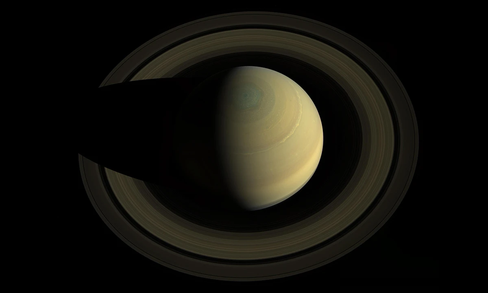

Атлас Солнечной системы
Мифы на орбите
На небе у Сатурна есть спутник Рея. В греческом мифе Рея — мать Зевса. Как эти имена оказались рядом?
Открыть систему СатурнаНебесные тела
Маршруты по мифам
Имена и истории

Атлас Солнечной системы
На небе у Сатурна есть спутник Рея. В греческом мифе Рея — мать Зевса. Как эти имена оказались рядом?
Открыть систему СатурнаИмена и истории